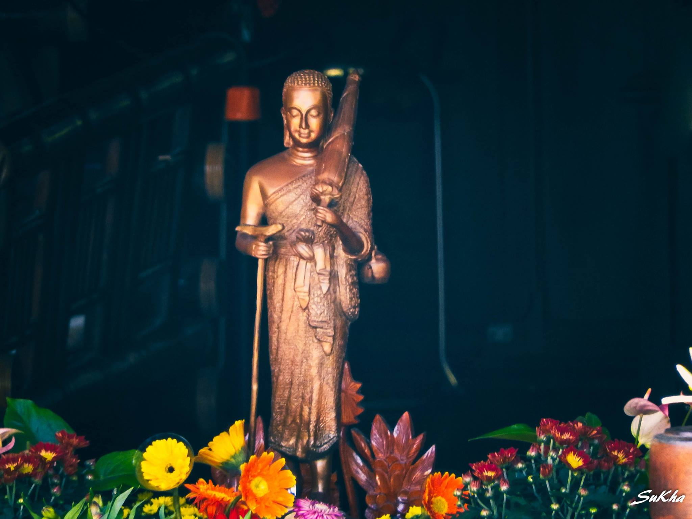

Nhà nằm cạnh rừng, chỉ trèo lên mươi bước là cái gì cũng ở dưới chân. Có lẽ chỉ ở xứ sở này mới có những khu rừng kiểu đó. Rừng trên những dãy đồi cao tiếp nối nhau qua nhiều làng mạc, những khu dân cư thường có cái tên kết thúc bằng một ...


Quy y Phật Bảo cao minh
Quy minh Phật Bảo cao minh rạng ngời
Quy y Tăng Chúng ba đời
Quy y như vậy, chính nơi hướng về!
Tin tức
-
25/2/2021 Một Thuở Yêu Người -

25/2/2021 Hãy Tử Tế Với Nhau Có lần đức Đạt Lai Lạt Ma chia sẻ, "Nếu ta có một tôn giáo thì rất tốt. Nhưng thật ra nếu như không có tôn giáo chúng ta cũng vẫn có thể tồn tại và tự xoay xở được. Còn nếu như không có tình người thì chúng ta sẽ không thể nào tồn ...
-
25/2/2021 Nam Phương Thoại Đầu Công trình thủy điện Tam Hiệp của Trung Quốc đã xóa sổ nhiều khu dân cư trù mật, gồm cả những cổ thành đầy ắp di tích lịch sử. Zuckerberg, một du khách người Đức đã may mắn ghé qua Sư Thành, một cổ trấn kiểu vậy ở Triết Giang trước khi nó thực sự ...
-
25/2/2021 Một Thuở Yêu Người Nhà nằm cạnh rừng, chỉ trèo lên mươi bước là cái gì cũng ở dưới chân. Có lẽ chỉ ở xứ sở này mới có những khu rừng kiểu đó. Rừng trên những dãy đồi cao tiếp nối nhau qua nhiều làng mạc, những khu dân cư thường có cái tên kết thúc bằng một ...
Thơ Văn
-
Chùm thơ mùa Hiếu Hạnh
Ngoài hiên
Đọc tiếp
gió hát ầu ơ
Lá rơi
rơi nhẹ,
Vu vơ nắng vàng
Khẽ thôi nhé,
mùa thu sang
Mẹ ta vừa ngủ
mơ màng chưa say! -

Khói chiều
Nó hỏi mẹ: “Khói lam chiều là gì hở mẹ?”. Mẹ ôm nó vào lòng, hôn lên bờ má mủm mỉm của nó, chỉ lên mái tranh – nơi có những sợi khói nhẹ nhàng đang bay lên...
Đọc tiếp -
Hành trình của một chiếc lá
Đêm đã về khuya. Trăng sáng vằng vặc, bao trùm lên không gian yên tĩnh một thứ ánh sáng vàng nhạt. Ánh sáng ấy như dải lụa mượt mà, mỏng manh được dệt từ một loại tơ thượng hạng. Nó nhẹ nhàng lách mình qua kẽ lá, rồi đột nhiên tràn xuống chảy dọc theo dòng sông lấp lánh...
Đọc tiếp
Triễn Lãm

Ký Họa Khất Thực Của Họa Sỹ Trần Bình Linh An
Một số bức ký họa về chư Tăng Nam Tông ôm bát khất thực trong kinh thành Huế của anh Trần Bình Linh An.


Sinh hoạt
-
Thông báo lộ trình Chủ Nhật Vàng tuần 19
07/052017 (12/04/PL2560) - của chư Tăng Huyền Không Sơn Thượng (khoảng 16 vị): Bắt đầu ở Đập Đá, đi theo đường Lê Lợi qua cầu Tràng Tiền > chợ Đông Ba > cầu Gia Hội > đường Bạch Đằng - qua chùa Diệu Đế > đường Nguyễn Chí Thanh và kết thúc ở chùa Tăng Quang. Dự kiến quý Sư sẽ bắt đầu đi bát lúc 7h. Kính chúc chư Phật tử một mùa lễ Vesak (tức lễ Tam hợp: Đức Phật Đản sinh, Thành đạo và Niết bàn) được tràn đầy an vui và vô lượng phước lành...
Đọc tiếp
- 


-
Khóa Xuất Gia Gieo Duyên 2016 – Lịch Trình Khất Thực
07/052017 (12/04/PL2560) - của chư Tăng Huyền Không Sơn Thượng (khoảng 16 vị): Bắt đầu ở Đập Đá, đi theo đường Lê Lợi qua cầu Tràng Tiền > chợ Đông Ba > cầu Gia Hội > đường Bạch Đằng - qua chùa Diệu Đế > đường Nguyễn Chí Thanh và kết thúc ở chùa Tăng Quang. Dự kiến quý Sư sẽ bắt đầu đi bát lúc 7h. Kính chúc chư Phật tử một mùa lễ Vesak (tức lễ Tam hợp: Đức Phật Đản sinh, Thành đạo và Niết bàn) được tràn đầy an vui và vô lượng phước lành...
Đọc tiếp -
Danh Sách Học Viên Tham Gia Khóa Xuất Gia Gieo Duyên Lần IV – 2016
07/052017 (12/04/PL2560) - của chư Tăng Huyền Không Sơn Thượng (khoảng 16 vị): Bắt đầu ở Đập Đá, đi theo đường Lê Lợi qua cầu Tràng Tiền > chợ Đông Ba > cầu Gia Hội > đường Bạch Đằng - qua chùa Diệu Đế > đường Nguyễn Chí Thanh và kết thúc ở chùa Tăng Quang. Dự kiến quý Sư sẽ bắt đầu đi bát lúc 7h. Kính chúc chư Phật tử một mùa lễ Vesak (tức lễ Tam hợp: Đức Phật Đản sinh, Thành đạo và Niết bàn) được tràn đầy an vui và vô lượng phước lành...
Đọc tiếp -
Thầy cùng chư Sư, chư Ni viếng thăm Tịnh Thất Đầu Đà (cơ sở mới)
07/052017 (12/04/PL2560) - của chư Tăng Huyền Không Sơn Thượng (khoảng 16 vị): Bắt đầu ở Đập Đá, đi theo đường Lê Lợi qua cầu Tràng Tiền > chợ Đông Ba > cầu Gia Hội > đường Bạch Đằng - qua chùa Diệu Đế > đường Nguyễn Chí Thanh và kết thúc ở chùa Tăng Quang. Dự kiến quý Sư sẽ bắt đầu đi bát lúc 7h. Kính chúc chư Phật tử một mùa lễ Vesak (tức lễ Tam hợp: Đức Phật Đản sinh, Thành đạo và Niết bàn) được tràn đầy an vui và vô lượng phước lành...
Đọc tiếp